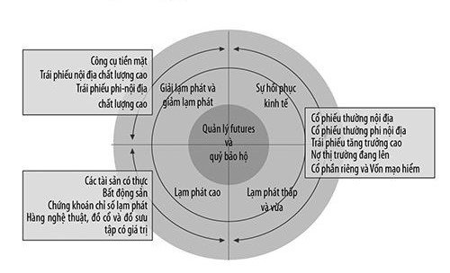

MỤC LỤC
2.2.
Xây nhà
Cũng giống như ngôi nhà, danh mục đầu tư cần phản ánh tính cách của bạn.
TRÊN NHIỀU PHƯƠNG DIỆN, tổ chức một danh mục đầu tư cũng giống như mua một ngôi nhà và trang hoàng nó vậy. Mỗi gia đình sẽ có các nhu cầu nhà ở khác nhau, và bên trong mỗi ngôi nhà, mỗi phòng sẽ có mục đích sử dụng riêng. Khi đi mua nhà, chúng ta cần có một ý niệm về việc mình thích có bao nhiêu phòng và định sử dụng mỗi phòng như thế nào, thêm vào đó là muốn các căn phòng đó trông ra sao. Nếu không nghĩ trước về những điều ấy, rất có thể ta sẽ mua phải một ngôi nhà quá to hoặc quá nhỏ, với những món đồ đạc có sẵn kỳ quặc, hoặc cái gì đó mà người bán ấn vào tay nhưng lại chẳng có giá trị gì cho ta cả. Có thể ta sẽ được một chiếc trường kỷ trông có vẻ rất tuyệt trong phòng khách nhà người hàng xóm chứ chẳng hợp gì với phòng khách nhà mình. Có thể bạn sẽ được một chiếc tủ lạnh rất tốt cho cặp vợ chồng mới cưới hàng xóm nhưng hoàn toàn không đủ lớn cho gia đình năm thành viên của bạn.
Ðiều ấy cũng giống với việc tổ chức một danh mục đầu tư. Danh mục đầu tư của tôi sẽ khác của bạn, khác với của bạn thân hoặc anh em của bạn - thậm chí dù chúng ta đều sàn sàn tuổi nhau. Chúng ta cần có một ý niệm nào đó về việc sẽ sử dụng các tài sản nào - cũng như những đồ đạc trong nhà - và ta định đặt chúng ở đâu. Sau đó, ta có thể xem xét bất cứ sản phẩm mới, bán chạy nào mà ngành công nghiệp tài chính đang ném vào ta đó. Giống như giấy dán tường màu hồng, nó có thể tuyệt đối hoàn hảo cho ta hoặc có thể là một sai lầm to lớn. Chỉ vì những người bạn tốt của bạn có một đầu tư mà họ thích thú không có nghĩa là nó sẽ phù hợp trong danh mục của bạn. Ta cần ý thức về những đặc tính và mục đích sử dụng đặc biệt của mỗi loại tài sản để không đi đến chỗ đưa ra một danh mục đầy những đầu tư như kiểu đèn bàn lava [1] và các thảm dày trải sàn - hoặc thậm chí đồ đạc rất đẹp nhưng quá to, không vừa được với các phòng của ta. Ta cần tâm niệm rằng cũng như một cái bàn ăn về chất liệu có thể được làm từ gỗ ép đến gỗ cây anh đào tốt nhất, danh mục mỗi loại tài sản cũng có vô số chất lượng.
Người ta có các động lực, lý do tài chính và các nhu cầu cảm xúc khác nhau - từ thói hám lợi đến nỗi sợ hãi, từ sự thoải mái đến sự không quen thuộc - tác động đến các quyết định đầu tư của họ. Lý do tại sao ta lại mua thứ mà ta đã mua, phụ thuộc vào một loạt các nhân tố khác nhau. Các kiểu tài sản chính (loại đồ đạc trong ngôi nhà của bạn) và các lý do thông thường nhất giải thích việc ta sở hữu chúng được chỉ ra.
Ðể có được một căn nhà đúng ý, các phòng khác nhau phải phục vụ tốt trong những thời điểm khác nhau. Ðây là phòng coi TV với màn hình lớn và quầy bar. Theo danh mục đầu tư của ta, phòng ấy có những tài sản hoạt động tốt trong những thời điểm kinh tế và tài chính đang tiến triển tốt. Ta còn có các phòng để thư giãn và tạo cảm giác an toàn. Các phòng ngủ trong danh mục đầu tư cần có các tài sản có xu hướng tiến triển tốt trong những hoàn cảnh kinh tế và tài chính khó khăn (như một môi trường kinh doanh khắc nghiệt, lạm phát cao, giảm lạm phát, hoặc các điều kiện chính trị và địa chính trị không ổn định). Một số phòng trong nhà lại có các chức năng đặc biệt. Phòng bếp của danh mục đầu tư của ta có các đặc tính thực hiện chức năng tốt trong suốt mọi loại thời điểm. Hãy nghĩ về nó theo cách này: Nếu TV của bạn bị hư, bạn có thể đọc sách, chơi cờ, hoặc đi chơi bằng xe đạp. Nếu lò nướng của bạn bị hư, bạn sẽ ăn thức ăn nguội hoặc buộc phải đi ăn tiệm (hoặc gọi thức ăn mang đến), vì thế, sẽ xuất hiện các phí tổn lớn hơn nhiều chỉ để nuôi ăn bạn và gia đình.
Ðể nhà của bạn hoạt động tốt, thoải mái và trông như bạn muốn, các phòng phải đáp ứng các chức năng riêng của chúng theo cách sao cho thỏa mãn sự nhạy cảm của riêng bạn - chứ không phải của mẹ bạn hay của hàng xóm. Bạn là người sống trong ngôi nhà và danh mục đầu tư của mình. Ðể danh mục đầu tư phát đạt qua một thời gian dài, nói chung bạn cần có một hỗn hợp các khoản đầu tư hoạt động tốt, thoải mái và thú vị. Qua thời gian, sự việc sẽ thay đổi và bạn có thể sẽ biến phòng ngủ cho khách thành văn phòng làm việc. Cũng bằng cách đó, bạn có thể thay đổi một cách khôn ngoan các lựa chọn đầu tư của mình dựa trên những điều kiện đang thay đổi. Sử dụng tài sản vững chắc phải phục vụ cho các nhu cầu của bạn, bảo vệ bạn khỏi các yếu tố tăng giá trị theo thời gian, và không khiến bạn mất quá nhiều chi phí tài chính hoặc nhức đầu kéo dài. (Khẩu hiệu của sử dụng tài sản của bạn phải giống như khẩu hiệu của dịch vụ Bưu điện Mỹ: giao hàng kể cả khi tuyết rơi, mưa gió, nắng nóng hoặc đêm u ám.)
Ở cấp độ căn bản nhất, sử dụng tài sản bao hàm việc đạt được một sự hiểu biết về những loại tài sản nào hoạt động tốt nhất khi đi cùng nhau và loại nào hoạt động tốt nhất khi được tách riêng; đối với ai; dưới những hoàn cảnh nào; trong bao lâu; và với các phí tổn và các rủi ro hiển nhiên nào. Vả lại, nó rất giống với việc trang hoàng một ngôi nhà. Những chất liệu nào đi với nhau thì hợp và những chất liệu nào thì không? Liệu tôi có phải đến một cửa hàng ở phố chợ gần nhà để mua những gì mà căn phòng cần có, hay sẽ nhờ Ikea làm giúp tôi việc đó? Liệu món đồ nho nhỏ xinh xinh mà tôi tìm được ở chợ trời có thực sự hợp với căn phòng không hay sẽ làm cho nó trở nên lố lăng?
Ðể biết mỗi kiểu tài sản nào có thể và không thể hợp với bạn bao hàm việc trả lời một số câu hỏi cơ bản. Theo thuật ngữ đầu tư, loại tài sản ấy hoạt động như thế nào (và ta có thể mong đợi nó hoạt động như thế nào) trong những thời điểm tốt, trong các thời điểm xấu, hoặc trong các thời điểm bình thường? Liệu kiểu đầu tư ấy có phản ứng chủ yếu với những biến động tỷ lệ lợi tức, với các điều kiện cung-cầu, hay phản ứng với cái gì mà nhà đầu tư khác sẵn lòng trả cho nó? Lợi nhuận của tài sản sẽ sản sinh dưới hình thức lợi tức, lợi nhuận từ việc bán các lợi nhuận đầu tư, hay cả hai? Trên thực tế, lợi nhuận có thể có được là nhiều hay ít? Những dao động có quan trọng với tôi không? Liệu loại tài sản ấy có xu hướng hoạt động giống hoặc khác với các loại tài sản khác không? Lợi nhuận được tạo ra qua khung thời gian thông thường nào? Các lợi nhuận có thể đoán được hoặc không thể đoán được như thế nào? Việc tìm hiểu, hiểu biết, tiếp cận, tham gia, sở hữu, theo dõi, trả thuế, và bán đầu tư ấy có dễ dàng không?
Mọi phần của loại tài sản này có giống nhau nhiều không? Chẳng hạn, như bạn dễ thấy, các trái phiếu Kho bạc Mỹ là loại tài sản chỉ theo những kỳ hạn riêng của Kho bạc Mỹ. Các loại tài sản khác như cổ phần và bất động sản có thể biến đổi rộng về chất lượng và đặc tính. Liệu loại tài sản ấy có chứa đựng nhiều tiểu loại và biến thể không? Liệu loại tài sản ấy về cơ bản là có sẵn trong thị trường trong nước hay trong một môi trường nước ngoài? Tài sản được tạo ra như thế nào? Các kiểu nhà đầu tư nào thích đầu tư vào loại tài sản này? Các lực nào thúc đẩy việc mua và bán chúng?
Cho là lịch sử không luôn luôn diễn ra theo những mô hình có thể lặp lại (không ai rung chuông khi thị trường và các chu kỳ kinh tế thay đổi), một lối tiếp cận cố định có lẽ sẽ không phù hợp với hầu hết mọi người qua mọi vòng quay thị trường. Tuy nhiên, vẫn có ích khi ghi nhớ trong đầu về cách thức mỗi loại đầu tư có xu hướng hoạt động như thế nào dưới một dãy các điều kiện của thị trường. Những lĩnh vực nhấn mạnh loại tài sản tương đối này (và vì thế cũng giảm sự nhấn mạnh lên các loại tài sản tương đối khác) được thấy một cách thú vị trong một dụng cụ đo sự sử dụng tài sản mà tôi đã phát triển và gọi là đồng hồ sử dụng tài sản (hình 2.2).

Ðồng hồ sử dụng tài sản chỉ ra rằng, nói chung, việc tập trung vào các tài sản có vẻ cân bằng trong suốt những giai đoạn tăng trưởng kinh tế và có lạm phát từ thấp đến vừa là một ý tưởng tốt. Khi làm vậy, bạn sẽ nhấn mạnh vào các tài sản có thực, phi tài chính (như bất động sản, hàng hóa và các kim loại quý) trong suốt thời gian lạm phát cao và tập trung vào các đầu tư tiền mặt và các chứng khoán thu nhập cố định chất lượng cao, như cổ phần, trong suốt những giai đoạn giải lạm phát và giảm lạm phát. Do bởi mức độ tương đối cao dễ xuất hiện chủ nghĩa cơ hội và đặc tính quản lý tương lai đã được kiểm soát và các quỹ bảo hộ (hay các cá nhân tự tiếp cận hoặc thông qua một quỹ của các quỹ) được đặt vào trung tâm của đồng hồ sử dụng tài sản để chỉ ra tiềm năng sử dụng của chúng (phụ thuộc vào việc các đầu tư ấy có phù hợp với bạn hay không) dưới một dãy các điều kiện kinh tế và tài chính khá rộng.
Hãy xem xét các lựa chọn mà ta có để trang hoàng nhà cửa. Giống như mỗi loại đồ đạc và đồ trang trí mà chúng ta chọn cho phù hợp với một mục đích riêng, mỗi loại tài sản cũng có mục đích riêng và các đặc tính duy nhất.
Các cổ phần đại diện cho các phòng giải trí trong nhà. Ðây là nơi chúng ta hưởng thụ một cuộc sống tốt. Mỗi đầu tư vào các cổ phần sẽ mang lại cho ta cơ hội tham gia vào các thời điểm kinh tế tốt và hưởng thụ các thành quả của nỗ lực con người. Giống như tất cả chúng ta đều có những ý tưởng khác nhau thế nào là vui vẻ và có thể có các loại đồ đạc khác nhau trong các phòng giải trí hoặc phòng sinh hoạt chung, các cổ phần cũng có những sự phân loại rất đa dạng. Một người có thể có một màn hình TV 60 inch và một bàn bi-da, trong khi người khác lại thích bàn cờ và người khác nữa lại thích các kệ sách áp tường. Phòng xem TV, phòng chơi, thư viện - mỗi phòng đều có một “tông” và cảm giác khác nhau, nhưng đều nhằm giúp ta hưởng thụ cuộc sống và thư giãn. Các cổ phần cũng giống vậy. Chúng có thể được phân loại theo kích thước, theo các chi tiết đánh giá riêng, hoặc theo khu vực địa lý, nhưng đều có mục đích chung giống nhau - để nắm được những lợi nhuận tốt nhất trong khi thừa nhận rằng sự bất ổn giá luôn là một rủi ro.
Các trái phiếu và các đầu tư có lợi tức cố định khác đại diện cho phòng ngủ trong nhà. Ở đây, chúng ta muốn được an toàn và được che chở khỏi những khó khăn hàng ngày. Nhìn chung, trái phiếu mang lại sự an toàn và thoải mái. Tuy nhiên, hãy tâm niệm rằng giống như căn phòng kiểu cổ, giường có mái che rất khác với phòng ngủ với giấy dán tường đỏ rực và một cái giường tròn kiểu hiện đại, các trái phiếu có thể biến đổi rộng về chất lượng và thời gian đáo hạn của chúng, từ các trái phiếu kho bạc cực kỳ bảo đảm đến các trái phiếu tạp nham hoặc sinh lợi cao. Tuy tất cả đều phản ứng với các tỷ lệ lợi tức, nhưng các trái phiếu rủi ro và đáo hạn lâu hơn sẽ chịu được sự dao động giá rộng hơn các trái phiếu ngắn hạn, an toàn hơn.
Hầu hết mọi ngôi nhà đều có một phòng hoàn toàn khác với nhà của tất cả những người khác và phản ánh thị hiếu riêng nào đó của người cư ngụ. Nó có thể là phòng nghiên cứu của cha với một cái bàn lỗi thời, một hộp giữ ẩm xì gà, và chai Brandy cổ nhỏ vốn hoàn toàn không thích hợp với kiểu dáng hiện đại của phần còn lại ngôi nhà. Nó có thể là một phòng khách bên ngoài một phòng ngủ, bài trí kiểu xa xưa mà bà nội ta thường rất thích khi bà đến thăm. Các đầu tư xen kẽ trong thế giới đầu tư là hoàn toàn khác nhau, cũng như những căn phòng ấy. Các tài sản này gồm bất động sản, cổ phần riêng, kim loại quý, hoặc thậm chí là các chứng khoán chống lạm phát. Chúng có thể có vẻ lạc lõng trong một danh mục đầu tư thông thường khác như cổ phần và trái phiếu, nhưng thỏa mãn một nhu cầu đặc biệt. Lợi nhuận ở đây có vẻ là một kết quả của sự lạm phát hoặc kỹ năng quản lý. Ðiều mà mọi loại đầu tư này đều có chung là lợi nhuận của chúng thường được tạo ra bởi những sự tác động khác với những lực đang tác động đến cổ phần và các đầu tư trái phiếu truyền thống hơn của ta, khiến chúng trở thành một lựa chọn tốt cho sự đa dạng hóa.
Một số phòng trong nhà của bạn thì bình thường hơn nhưng không kém phần quan trọng. Tầng hầm có thể không thực sự làm ta thích thú hoặc sẽ không phải một nơi ta ở trong thời gian dài, nhưng máy nước nóng và bảng phân phối điện là thiết yếu cho sự vận hành suôn sẻ của phần còn lại của ngôi nhà. Hay - tầng áp mái (khoảng không gian không được sử dụng thường xuyên khác) cũng quan trọng ở sự cách ly của nó để giữ ấm nhà trong mùa đông và làm mát trong mùa hè, đỡ áp lực lên các hệ thống làm nóng và làm lạnh. Các buồng nhỏ trước nhà cung cấp chỗ cho đường dẫn hệ thống báo động để bảo vệ gia đình và đồ dùng gia đình của ta khỏi bị trộm. Hãy nghĩ về những căn phòng ấy như bộ phận tiền mặt trong danh mục đầu tư của bạn. Tiền mặt mà ta có thể dễ dàng sử dụng mọi lúc, nhất là trong những thời khắc khó khăn. Ta giữ tiền và biết là lúc nào đó sẽ cần đến để đáp ứng một nhu cầu đặc biệt hay có sẵn dành cho những lúc khẩn cấp.
Cách thức trang hoàng nhà cửa là thuộc về từng cá nhân. Nghệ thuật và các món đồ trang trí mà ta chọn là có giá trị đối với ta vì những lý do nhất định. Ta có thể nghĩ một bức tranh của Monet là đẹp và Jackson Pollock là một bậc thầy vung vãi loạn trí. Những món đồ mà chúng ta sẵn sàng chi trả để mua về treo lên tường và bệ lò sưởi hoàn toàn bị chi phối bởi cách chúng ta cảm nhận về chúng như thế nào. Tranh của một đứa trẻ có thể không có giá trị gì đối với một người lạ, nhưng rất đáng giá đối với cha mẹ của bé. Các chợ bán đồ nghệ thuật và các đồ sưu tập hoạt động phần nhiều theo cách này. Các giá trị bị chi phối bởi tính phổ biến, thị hiếu và bởi một loạt những đặc trưng không thể xác định về lượng khác. Các tài sản trong thị trường này đáng giá với thứ mà người nào đó sẵn lòng trả để mua nó - không hơn không kém. Một số người có con mắt sành đánh giá các giá trị nghệ thuật và cổ vật, và số khác thì chỉ là may mắn.
Cách bạn mua, giữ và cuối cùng là bán một tài sản như thế nào có thể cũng quan trọng như việc bạn sở hữu cái gì. Cách thức bạn đầu tư vào các loại tài sản đặc biệt chủ yếu có xu hướng đóng vai trò một chức năng của việc: 1) bạn có bao nhiêu tiền có liên quan đến những khoản đầu tư tối thiểu dùng để mua tài sản ấy, 2) bạn có thể dành bao nhiêu thời gian và sự quan tâm cho việc đầu tư, 3) kinh nghiệm đầu tư của bạn, và 4) các nguồn thông tin và cố vấn đầu tư mà bạn ưa thích.